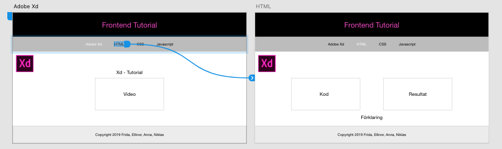

Xd - Tutorial
Experience Design
Adobe Experience Design är ett program som gör det smidigt att ta fram prototyper för alla sorters enheter. På ett och samma artboard så kan du skapa form för flera olika enheter samt länka ihop sidorna till varandra vilket ger en mer realistiskt intryck.
I videon ovan kan ni ta del av när jag skapade denna sidan, för Dator, som mockup i Adobe Xd.
I videon ovan kan ni ta del av när jag skapade denna sidan, för Mobil, som mockup i Adobe Xd.
Att tänka på när du använder dig av Adobe Xd
- Välj vad din design ska representera en mockoup för.
- Börja med grunderna.
- Glöm inte att skapa mappar för en bättre struktur.
-
Färger kan anges med Hex, RGB och HSB. Samt med hjälp av Pipett (
 ).
).
- Adobe Xd hjälper genom att markera avståndet till varandra, exempel kan man se när jag skapar menyn.
- Du kan dra linje mellan olika tavlor för att göra dina prototyper levande och ge dem en mer realistisk upplevelse. 
- Du kan sätta fasta positioner på rubriker och sidfot, så att de blir fast placerade när det scrollas.
- Kom ihåg att namnge och spara dokumentet.